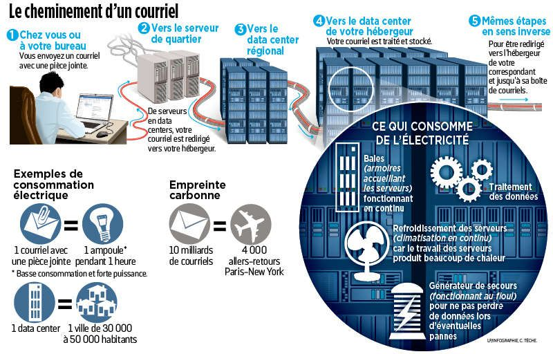
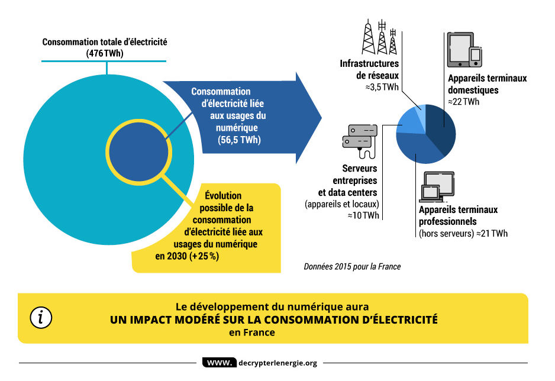

Qu'est-ce qui est réellement polluant sur le web?
Si Internet était un pays, il serait le cinquième plus grand pollueur dans le monde. En effet, les nouvelles technologies de l’Information et de la Communication (NTIC) ont à jamais bouleversé notre quotidien. On pourrait penser qu’elles répondent aux problèmes environnementaux: moins de déplacements et donc moins d'émissions de CO2, moins de papier utilisé et donc une déforestation stoppée. Mais qu'en est-il réellement? Si les moyens de communications numériques sont bel et bien virtuels, les transits entre les serveurs informatiques sont bien réels et polluent la planète.
Qu'est ce qu'un data center?
Selon Vinci Energies
Accéder au site
Le data center (centre de traitement des données en français) est l’un des éléments nécessaires au traitement et stockage des données numériques. Indispensable à Internet, il a connu un fort développement avec l’essor du cloud computing. Concrètement, il s’agit d’un lieu physique contenant les serveurs informatiques qui stockent les données numériques et dans lequel les entreprises peuvent notamment louer un espace de stockage et ainsi éviter la présence de serveurs dans leurs locaux.
Localisation des data centers en France

Pourquoi un data center est-il si polluant?
Selon Sciences et Avenirs
Accéder au site
Le numérique, qui a pris une place inédite dans nos vies, a lui aussi une empreinte écologique. Dans son ensemble, le secteur du numérique engloutissait près de 10% de la production électrique mondiale en 2015. Les data centers en accaparent 18%, selon une synthèse publiée fin 2017 par l'association négaWatt et reprise par le site GreenIT.
En France, la consommation des data centers s'élevait à environ 3 TWh en 2015, soit davantage que la consommation électrique de la ville de Lyon, selon l'Union française de l'électricité (UFE). À quoi tient-elle ? Il faut bien entendu alimenter en électricité les nombreux appareils. Mais elle est principalement dissipée sous forme de chaleur lorsqu'elle passe dans un matériau conducteur, ce qu'on appelle "effet joule". De ce fait, environ 50% de la facture d'électricité d'un data center... tient à la climatisation
En France, la consommation des data centers s'élevait à environ 3 TWh en 2015, soit davantage que la consommation électrique de la ville de Lyon, selon l'Union française de l'électricité (UFE). À quoi tient-elle ? Il faut bien entendu alimenter en électricité les nombreux appareils. Mais elle est principalement dissipée sous forme de chaleur lorsqu'elle passe dans un matériau conducteur, ce qu'on appelle "effet joule". De ce fait, environ 50% de la facture d'électricité d'un data center... tient à la climatisation


Tableau d'équivalence
| Action sur le web | Equivalent en pollution |
|---|---|
| Un mail | Un sac plastique soit environ 10g de CO2 |
| Une pièce jointe | Une ampoule pendant 1 heure soit 19g de CO2 |
| Une recherche Internet | 7g de CO2 |
| 500 kg de CO2/seconde |
Comment diminuer la pollution liée au web?
Selon Hippocampe.fr
Accéder au site
Pour réduire la pollution liée au web, il existe plusieurs solutions. En voici une petite liste des actions que nous pouvons faire:
- Désactivez vos notifications
- Triez et supprimez les mails inutiles
- Faites un bilan de votre activité numérique pour désactiver ou désinstaller les applications peu ou pas utilisées
- Utilisez un moteur de recherche responsable
- Tapez directement l'url du site que vous voulez visiter sans passer par le moteur de recherche (Sites en Favoris)
- Evitez les fautes d'orthographes lors de votre recherche afin d'éviter d'en relancer une autre
Sources:
- BFM Business
- Le BigData
- Vinci Energies
- Sciences et Avenirs
- Hippocampe.fr
- Le Parisien
- Cleanfox
- information.tv5monde.com
- businessinsider
Publier